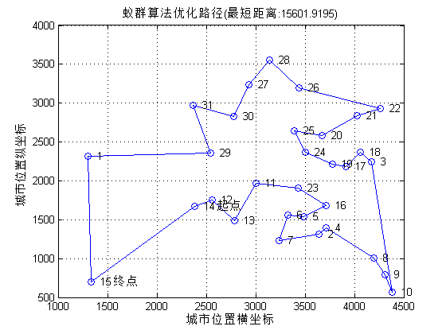
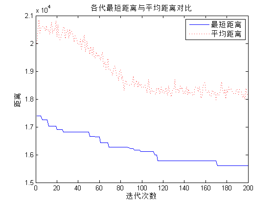

Contents
I. 清空环境变量
clear all
clc
II. 导入数据
load citys_data.mat
III. 计算城市间相互距离
n = size(citys,1);
D = zeros(n,n);
for i = 1:n
for j = 1:n
if i ~= j
D(i,j) = sqrt(sum((citys(i,:) - citys(j,:)).^2));
else
D(i,j) = 1e-4;
end
end
end
IV. 初始化参数
m = 50;
alpha = 1;
beta = 5;
rho = 0.1;
Q = 1;
Eta = 1./D;
Tau = ones(n,n);
Table = zeros(m,n);
iter = 1;
iter_max = 200;
Route_best = zeros(iter_max,n);
Length_best = zeros(iter_max,1);
Length_ave = zeros(iter_max,1);
V. 迭代寻找最佳路径
while iter <= iter_max
start = zeros(m,1);
for i = 1:m
temp = randperm(n);
start(i) = temp(1);
end
Table(:,1) = start;
citys_index = 1:n;
for i = 1:m
for j = 2:n
tabu = Table(i,1:(j - 1));
allow_index = ~ismember(citys_index,tabu);
allow = citys_index(allow_index);
P = allow;
for k = 1:length(allow)
P(k) = Tau(tabu(end),allow(k))^alpha * Eta(tabu(end),allow(k))^beta;
end
P = P/sum(P);
Pc = cumsum(P);
target_index = find(Pc >= rand);
target = allow(target_index(1));
Table(i,j) = target;
end
end
Length = zeros(m,1);
for i = 1:m
Route = Table(i,:);
for j = 1:(n - 1)
Length(i) = Length(i) + D(Route(j),Route(j + 1));
end
Length(i) = Length(i) + D(Route(n),Route(1));
end
if iter == 1
[min_Length,min_index] = min(Length);
Length_best(iter) = min_Length;
Length_ave(iter) = mean(Length);
Route_best(iter,:) = Table(min_index,:);
else
[min_Length,min_index] = min(Length);
Length_best(iter) = min(Length_best(iter - 1),min_Length);
Length_ave(iter) = mean(Length);
if Length_best(iter) == min_Length
Route_best(iter,:) = Table(min_index,:);
else
Route_best(iter,:) = Route_best((iter-1),:);
end
end
Delta_Tau = zeros(n,n);
for i = 1:m
for j = 1:(n - 1)
Delta_Tau(Table(i,j),Table(i,j+1)) = Delta_Tau(Table(i,j),Table(i,j+1)) + Q/Length(i);
end
Delta_Tau(Table(i,n),Table(i,1)) = Delta_Tau(Table(i,n),Table(i,1)) + Q/Length(i);
end
Tau = (1-rho) * Tau + Delta_Tau;
iter = iter + 1;
Table = zeros(m,n);
end
VI. 结果显示
[Shortest_Length,index] = min(Length_best);
Shortest_Route = Route_best(index,:);
disp(['最短距离:' num2str(Shortest_Length)]);
disp(['最短路径:' num2str([Shortest_Route Shortest_Route(1)])]);
最短距离:15601.9195
最短路径:14 12 13 11 23 16 5 6 7 2 4 8 9 10 3 18 17 19 24 25 20 21 22 26 28 27 30 31 29 1 15 14
VII. 绘图
figure(1)
plot([citys(Shortest_Route,1);citys(Shortest_Route(1),1)],...
[citys(Shortest_Route,2);citys(Shortest_Route(1),2)],'o-');
grid on
for i = 1:size(citys,1)
text(citys(i,1),citys(i,2),[' ' num2str(i)]);
end
text(citys(Shortest_Route(1),1),citys(Shortest_Route(1),2),' 起点');
text(citys(Shortest_Route(end),1),citys(Shortest_Route(end),2),' 终点');
xlabel('城市位置横坐标')
ylabel('城市位置纵坐标')
title(['蚁群算法优化路径(最短距离:' num2str(Shortest_Length) ')'])
figure(2)
plot(1:iter_max,Length_best,'b',1:iter_max,Length_ave,'r:')
legend('最短距离','平均距离')
xlabel('迭代次数')
ylabel('距离')
title('各代最短距离与平均距离对比')
 